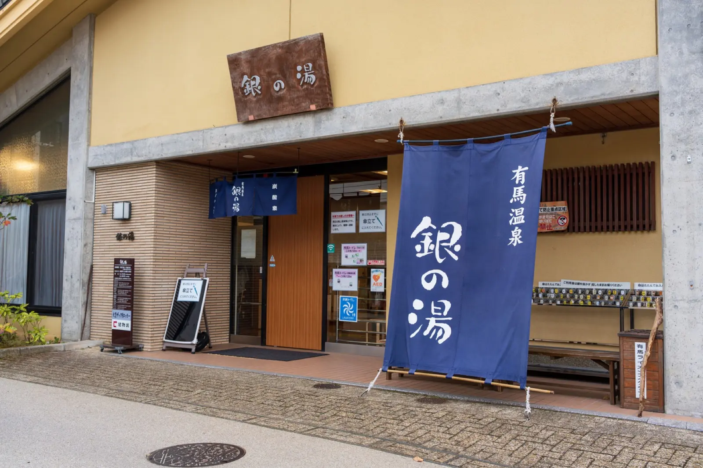

神戶為中心，一圈就走完One loop out of Kobe神戸を中心に、ひと回り
從神戶機場出發，往東是六甲山與有馬溫泉，往西是姬路城，神戶牛的餐廳就在市區。這四處彼此不順路，電車一天排不完——但一台車可以。 From Kobe Airport: Mount Rokko and Arima Onsen to the east, Himeji Castle to the west, and the Kobe beef restaurants in town. None of them are on the way to each other and no train timetable strings them together in a day — one car does.神戸空港を起点に、東へ六甲山と有馬温泉、西へ姫路城、神戸牛の店は市街に。互いに順路が悪く、電車では一日に収まりません。一台なら収まります。
神戶機場Kobe Airport神戸空港
長榮航空台北直飛的落地點。出關後不用排隊叫車，行李直接上車。Where EVA Air's Taipei flights land. No taxi queue after immigration — your luggage goes straight into the car.長榮航空（EVA Air）台北便の到着地。入国手続後、タクシーの列に並ばず、荷物はそのまま車へ。

三宮・北野Sannomiya & Kitano三宮・北野
神戶牛的餐廳與北野的異人館都在這一帶，是多數人住宿的落腳處。Kobe beef restaurants and the Kitano foreign residences sit side by side here; it is where most visitors base themselves.神戸牛の店と北野異人館が集まる一帯。多くの旅行者が宿を取るエリアです。
六甲山Mount Rokko六甲山
山上的庭園、展望台與舊建築裡散著當代藝術作品。「神戸六甲ミーツ・アート2026 beyond」期間，ROKKO森の音ミュージアム的「SIKIガーデン〜音の散策路〜」正在展出草間彌生《南瓜》（特別寄託）。夜裡則是神戶的夜景。Contemporary artworks are set through the gardens, lookouts and old buildings on the mountain. During 神戸六甲ミーツ・アート2026 beyond, Yayoi Kusama's Pumpkin is on show as a special loan at SIKIガーデン〜音の散策路〜 in the ROKKO森の音ミュージアム. After dark it becomes Kobe's night view.山上の庭園・展望台・古い建物に現代アート作品が点在します。「神戸六甲ミーツ・アート2026 beyond」の会期中は、ROKKO森の音ミュージアム「SIKIガーデン〜音の散策路〜」で草間彌生《南瓜》（特別寄託）が公開中。夜は神戸の夜景に変わります。
山上的庭園、展望台與舊建築裡散著當代藝術作品，夜裡則是神戶的夜景。Contemporary artworks are set through the gardens, lookouts and old buildings on the mountain; after dark it becomes Kobe's night view.山上の庭園・展望台・古い建物に現代アート作品が点在し、夜は神戸の夜景に変わります。
有馬溫泉Arima Onsen有馬温泉
神戶山後的溫泉鄉，金湯與銀湯的外湯就在坡道旁，離市區近得可以當天來回。The onsen town just behind Kobe's mountains, with the Kin-no-yu and Gin-no-yu bathhouses on the slope — close enough to visit and return the same day.神戸の山の裏手にある温泉街。金の湯・銀の湯の外湯が坂沿いにあり、日帰りできる近さです。

姬路城Himeji Castle姫路城
世界文化遺產・日本國寶，因外觀純白而被稱作「白鷺城」，是日本現存最完整的城郭之一。A UNESCO World Heritage site and National Treasure, known as the "White Heron Castle" for its white exterior — among the most completely preserved castles in Japan.世界文化遺産・国宝。白い外観から「白鷺城」と呼ばれ、日本で最も完全に残る城郭のひとつです。
淡路島Awaji Island淡路島
過了明石海峽大橋就是海。橋上的海景與島上的花田，適合排在半天的行程裡。Cross the Akashi Kaikyo Bridge and the sea opens up. The view from the bridge and the island's flower fields fit neatly into half a day.明石海峡大橋を渡ると海が開けます。橋からの眺めと島の花畑は、半日の行程に収まります。
神戶牛、姬路城、有馬溫泉、六甲山——四處都在神戶機場約1小時前後的車程內（姬路城約65分）。 Kobe beef, Himeji Castle, Arima Onsen, Mount Rokko — all four are roughly an hour's drive from Kobe Airport (Himeji Castle approx. 65 min).神戸牛・姫路城・有馬温泉・六甲山——いずれも神戸空港から車でおよそ1時間前後です（姫路城は約65分）。
所要時間為一般路況下的預估值，會因時段與天候變動。 Times are estimates under normal traffic and vary with time of day and weather.所要時間は通常の道路状況での目安です。時間帯・天候により変動します。
往下看 3 種一天的走法See three ways to spend a day一日の過ごし方を3つ見る